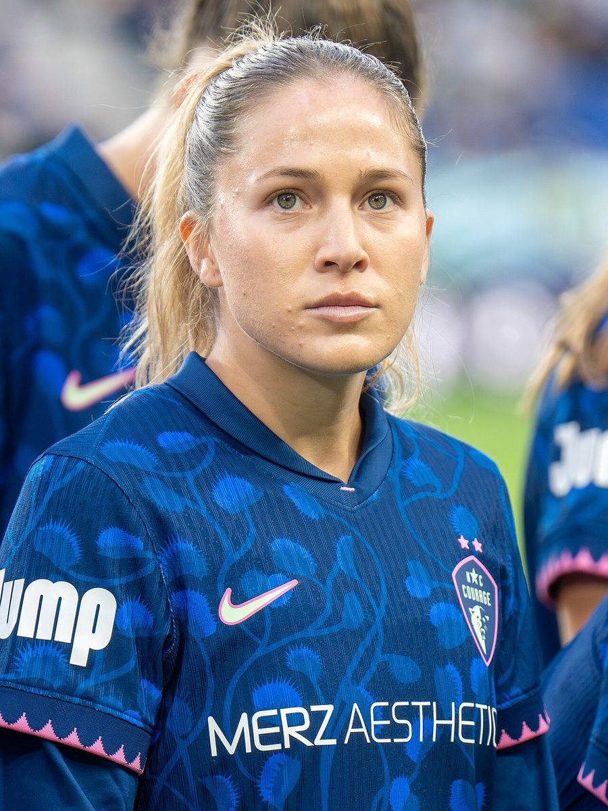

Хет-трик Эшли Санчес помог сборной США разгромить Сальвадор 8:0 и выйти на ЧМ-2027
Санчес забила три мяча за семь минут: сборная США вела 7:0 уже к перерыву четвертьфинала чемпионата КОНКАКАФ в Техасе.

Женская сборная США по футболу в пятницу вечером, 27 ноября, гарантировала себе путевку на чемпионат мира 2027 года в Бразилии. В четвертьфинале женского чемпионата КОНКАКАФ на арене «Техас Хелс Мэнсфилд Стэдиум» в городе Мэнсфилд (штат Техас) американки не оставили камня на камне от обороны Сальвадора — 8:0. Главной героиней вечера стала Эшли Санчес (Ashley Sanchez), оформившая хет-трик всего за семь минут.
Семь безответных мячей до перерыва
Счет на девятой минуте открыла Кеннеди Уэсли (Kennedy Wesley). На 31-й минуте Тирна Дэвидсон (Tierna Davidson) замкнула головой подачу Мэллори Суонсон (Mallory Swanson) со штрафного, а мгновениями позже Суонсон отличилась сама, сделав счет 3:0. Затем наступило время бенефиса Санчес: нападающая поразила ворота на 36-й, 39-й и 43-й минутах. Точку в первом тайме на 45-й минуте поставила София Уилсон (Sophia Wilson), доведя счет до неприличных 7:0. Окончательный результат на 80-й минуте установила вышедшая на замену Круа Бетьюн (Croix Bethune), забившая с передачи Линдси Хоран (Lindsey Horan).

Класс соперниц был несопоставим: по данным AP, сборная США занимает вторую строчку в рейтинге ФИФА, тогда как команда Сальвадора под руководством Эрика Акуньи (Eric Acuña) находится лишь на 78-й позиции.
Блестящая форма Санчес
Санчес подошла к матчам сборной на пике уверенности: как сообщает AP, по итогам клубного сезона в составе «Норт Каролина Кураж» она завоевала «Золотую бутсу» Национальной женской футбольной лиги (NWSL), забив 20 голов. «То, чего я добилась в клубе, — огромное достижение, и я просто старалась перенести этот кураж сюда», — призналась форвард.
Главный тренер американок Эмма Хейз (Emma Hayes) осталась довольна стартовой половиной встречи: «Считаю, что в первом тайме команда показала по-настоящему классную игру». Место в воротах с первых минут заняла Клаудия Дикки (Claudia Dickey), а Джейдин Шоу (Jaedyn Shaw) попала в заявку вместо Тринити Родман (Trinity Rodman), восстанавливающейся после небольшого повреждения плеча.

Впереди — Ямайка
В полуфинале турнира американкам предстоит встретиться с командой Ямайки. Ранее в пятницу ямайские футболистки также забронировали себе место на ЧМ-2027, переиграв на этом же стадионе Коста-Рику со счетом 3:0. По словам Суонсон, теперь все мысли команды связаны с завоеванием трофея: «Главную задачу мы выполнили, но теперь нам предстоит бороться за кубок, ведь это турнир на выбывание».